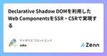
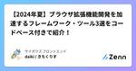
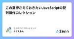

サイボウズ フロントエンドのフィード
https://zenn.dev/p/cybozu_frontend
サイボウズのフロントエンドに関わる人が発信するPublicationです
フィード

Declarative Shadow DOMを利用したWeb ComponentsをSSR・CSRで実現する 1
1
サイボウズ フロントエンドのフィード
!この記事は、CYBOZU SUMMER BLOG FES '24 (Frontend Stage) DAY 9の記事です。Interop 2024のFocus Areasの1つに、Web Componentsがあります。このWeb Componentsに関連する機能として、Declarative Shadow DOMやsetHTMLUnsafe、parseHTMLUnsafeが2024年に入って新たにBaselineに追加されました。これらの機能・Web APIは、サーバーサイドでの宣言的なShadow DOMの構築によるJavaScriptが無効な環境でも動作するWeb Co...
7時間前
Web上でサマータイムを考慮して時差の計算をする際のインサイト 1
サイボウズ フロントエンドのフィード
!この記事は、CYBOZU SUMMER BLOG FES '24 (Frontend Stage) DAY 8の記事です。こんにちは！サイボウズ株式会社フロントエンドエンジニアの protein_mochi です！夏といえば、サマータイム！今回は、「夏」と言えば手放せない存在の1つ「サマータイム(DST)」を紹介しつつ、Web上でサマータイムを考慮して時差の計算をする際のややこしい部分をピックアップして、それぞれの問題点と考えられる対応策をお届けします。 サマータイム？あ、あの美味しいやつねサマータイムとは、アメリカではDaylight Savings Time(DST...
1日前

process.getBuiltinModule(id) は TypeScript を ESM 化させるか？ 15
サイボウズ フロントエンドのフィード
!この記事は、CYBOZU SUMMER BLOG FES '24 (Frontend Stage) DAY 7 の記事です。こんにちは teppeis です。普段は開発本部長をやってますが、ブログフェスに駆り出されました！本日は Node v22.3.0 に続いて v20.16.0 にもバックポートされた process.getBuiltinModule(id) について解説します。 問題: 同期的な条件付き require を ESM 化できないNode v22 にて、フラグ付きで CJS (CommonJS Modules) から ESM を require できるよ...
3日前

React のカスタムフックの利点をオブジェクト指向の観点で考えてみる 37
サイボウズ フロントエンドのフィード
!この記事は、CYBOZU SUMMER BLOG FES '24 (Frontend Stage) DAY 6 の記事です。こんにちは。ぶっちーです。普段は kintone というプロダクトの新機能開発を行っており、最近は、フロントエンドの技術刷新に取り組んでいます。この技術刷新では、Closure Tools から React への置き換えを行っています。詳しくは、以下の記事をご覧ください。https://blog.cybozu.io/entry/2021/07/20/170000刷新をする中で、React を書いていくうちに React の設計、特に React Ho...
3日前

Cloudflare D1 を使った日本語の全文検索を実装する 32
サイボウズ フロントエンドのフィード
!この記事は、CYBOZU SUMMER BLOG FES '24 (Frontend Stage) DAY 5 の記事です。最近、SQL アンチパターンという本を読んでいたら、MySQL、 PostgreSQL、SQLite などのデータベースでも拡張機能を利用することで全文検索を実装できることを知りました。[1]SQLite で構築されている Cloudflare D1 についても調べてみたところ、制限はあるものの全文検索の拡張機能が使えるということがわかりました。Export is not supported for virtual tables, including ...
5日前

仕組みと嬉しさから理解するeslint FlatConfig対応 45
サイボウズ フロントエンドのフィード
!この記事は、CYBOZU SUMMER BLOG FES '24 (Frontend Stage) DAY 3 の記事です。 重い腰を上げて FlatConfig 対応をしたESLint が新しい設定形式として FlatConfig を導入してから随分と経ち、最新バージョンの v9 では FlatConfig がデフォルトになりました。一方で利用者の多い plugin でもなかなか対応が進まず、周りでは思ったよりも FlatConfig への移行が進んでいない印象を受けます。とはいえ次のバージョンである v10 では FlatConfig しかサポートしないことが予定されて...
6日前

【2024年夏】ブラウザ拡張機能開発を加速するフレームワーク・ツール3選をコードベース付きで紹介！ 125
サイボウズ フロントエンドのフィード
!この記事は、CYBOZU SUMMER BLOG FES '24 (Frontend Stage) DAY 2の記事です。本記事では、ブラウザ拡張機能開発を加速させる、個人的に注目な3つの拡張機能開発フレームワーク・ツール（WXT、Plasmo、Extension.js）を紹介します。サンプル拡張機能の実装を通して、それぞれの特徴、セットアップ方法、実際の開発フローを見ていきます。お好みの拡張機能開発ツールが見つかれば嬉しいです。 各フレームワーク・ツールの紹介 WXThttps://wxt.dev/WXTは、Viteベースのブラウザ拡張フレームワークです。次のよう...
7日前

この夏押さえておきたいJavaScriptの配列操作コレクション 63
サイボウズ フロントエンドのフィード
!この記事は、CYBOZU SUMMER BLOG FES '24 (Frontend Stage) DAY 1の記事です。こんにちは！サイボウズ株式会社フロントエンドエンジニアの おぐえもん（@oguemon_com） です。サイボウズの技術ブログの夏フェス・CYBOZU SUMMER BLOG FES '24が始まりました！企画の一環として、フロントエンドの記事が今日から20日連続投稿されますので、みなさんお楽しみに！今回は、コーディングに手放せない存在の1つ「配列」をテーマに、JavaScriptの配列操作の中でも普段使いしやすいものをピックアップして、細かいテクニックや...
8日前

3rd Party Cookie 廃止の方針変更など : Cybozu Frontend Weekly (2024-07-23号)
サイボウズ フロントエンドのフィード
こんにちは！サイボウズ株式会社 フロントエンドエキスパートチームの @mugi_uno です。 はじめにサイボウズ社内では毎週火曜日に Frontend Weekly と題し「一週間の間にあったフロントエンドニュースを共有する会」を開催しています。今回は、2024 年 7 月 23 日 の Frontend Weekly で取り上げた記事や話題を紹介します。 取り上げた記事・話題 Temporal を取り巻く仕様を整理するhttps://speakerdeck.com/sajikix/temporalwoqu-rijuan-kushi-yang-wozheng-li-s...
15日前
Interop 2024の中間アップデートなど: Cybozu Frontend Weekly (2024-07-16号)
サイボウズ フロントエンドのフィード
こんにちは！サイボウズ株式会社フロントエンドエンジニアのsaku (@sakupi01)です。 はじめにサイボウズ社内では毎週火曜日にFrontend Weeklyと題し「一週間の間にあったフロントエンドニュースを共有する会」を開催しています。今回は、2024/07/16のFrontend Weeklyで取り上げた記事や話題を紹介します。 取り上げた記事・話題 MySQLデータベースエンジンでJSをサポートデータベースエンジン側にあらかじめまとまったクエリの処理などを登録しておき、必要に応じて呼び出すことでその処理を実行できるストアドプロシージャやストアドファンクショ...
23日前
Chrome 127 betaの公開など: Cybozu Frontend Weekly (2024-07-09号)
サイボウズ フロントエンドのフィード
こんにちは！サイボウズ株式会社フロントエンドエンジニアのdaiki（@k1tikurisu）です。 はじめにサイボウズ社内では毎週火曜日にFrontend Weeklyと題し「一週間の間にあったフロントエンドニュースを共有する会」を開催しています。今回は、2024/07/09のFrontend Weeklyで取り上げた記事や話題を紹介します。 取り上げた記事・話題 React & Codemod Announcementhttps://codemod.com/blog/react-announcementReact 19への移行を支援するツール（codemod...
1ヶ月前
Temporalの近況(主にScopeを狭める話)
サイボウズ フロントエンドのフィード
Temporal についておさらいTemporal は新しく JavaScript の仕様として提案されている「日時を操作するための新しいグローバルオブジェクト」です。現在は Stage3 のプロポーザルとして細かい API などの形が協議されています。https://github.com/tc39/proposal-temporalTemporal は既存の Date オブジェクトにある次のような課題を解決するべく提案されました。ユーザーの現地時間と UTC 以外のタイムゾーンはサポートされないパーサーの動作の信頼性が低い日付オブジェクトが何を指しているのかわかりづら...
1ヶ月前
Explore デジタル庁デザインシステム ベータ版
サイボウズ フロントエンドのフィード
https://design.digital.go.jp/ デジタル庁デザインシステムデジタル庁デザインシステムとは、名前の通りデジタル庁が提供しているデザインシステムです。行政機関や公共性の高い組織のWebサイト、アプリケーションを構築する際に利用することを念頭に置いて構築されています。2024/05/30にv2.0.0としてベータ版が公開されました。 デジタル庁デザインシステムの内訳デジタル庁デザインシステムには以下の成果物が含まれています。デザインシステム本体Figmaのデザインデータ v2系Figmaのデザインデータ v1系React製のコードスニペット...
2ヶ月前
TypeScript 5.5 で追加された正規表現構文チェックを理解する
サイボウズ フロントエンドのフィード
TypeScript 5.5で、@graphemeclusterさんによって正規表現リテラルの構文チェックが導入されました🎉この構文チェックによって、正規表現に間違いがあった場合、事前にTypeScriptがエラーを出力してくれます。https://devblogs.microsoft.com/typescript/announcing-typescript-5-5/#regular-expression-syntax-checkingこの機能について、次のことが気になったので調べてみました。どんな構文がエラーになるかなぜ導入されたかどうやってチェックしているかJavaS...
2ヶ月前
Turborepo 2.0リリースなど: Cybozu Frontend Weekly (2024-06-18号)
サイボウズ フロントエンドのフィード
こんにちは! サイボウズ株式会社フロントエンドエンジニアの Saji (@sajikix) です。 はじめにサイボウズでは毎週火曜日に Frontend Weekly という「一週間にあったフロントエンドニュースを共有する会」を社内で開催しています。今回は、2024/6/18 の Frontend Weekly で取り上げた記事や話題を紹介します。 取り上げた記事・話題 feat: Add support for TypeScript config fileshttps://github.com/eslint/rfcs/pull/117ESLint の設定ファイルを ...
2ヶ月前
Server-Sent Events を複数パターンで実装して理解を試みる
サイボウズ フロントエンドのフィード
Server-Sent Events (SSE)目新しい技術というわけではありませんが、最近 Server-Sent Events (SSE) について言及する記事をよく見かけます。何番煎じかはわかりませんが、個人的に興味があることと、正直触ってみたことがなかったので、コードを書きつつ調べてみました。※本記事で登場するサンプルコードは次のリポジトリで公開しています。https://github.com/mugi-uno/sse-sandbox SSE とはSSE 自体を解説する記事は無数に存在するため詳細な説明は割愛しますが、簡単に言うと、サーバーからクライアントへ一方...
2ヶ月前
Storybook8.1からSubpath importsを使ったモジュールのモックができるように
サイボウズ フロントエンドのフィード
Storybook の 8.1 のリリースで、Storybook 上でコンポーネントを表示するときに特定のモジュールをモックできるようになった。 Module mockhttps://storybook.js.org/blog/type-safe-module-mocking/https://storybook.js.org/docs/writing-stories/mocking-modulesNode.js の Subpath imports を使い、package.json のimportsに Storybook で表示する際にモックするファイルを指定できる。モジュールを...
2ヶ月前
デジタル庁デザインシステムのサンプルコンポーネントなど: Cybozu Frontend Weekly (2024-06-04号)
サイボウズ フロントエンドのフィード
こんにちは！サイボウズ株式会社フロントエンドエンジニアのおぐえもん（@oguemon_com）です。 はじめにサイボウズでは毎週火曜日にFrontend Weeklyという「一週間にあったフロントエンドニュースを共有する会」を社内で開催しています。今回は、2024年6月4日のFrontend Weeklyで取り上げた記事や話題を紹介します。 取り上げた記事・話題 Portable stories for Playwright Component Testshttps://storybook.js.org/blog/portable-stories-for-playwri...
2ヶ月前
TypeScriptは26以上のメンバーを絞り込めない！
サイボウズ フロントエンドのフィード
この記事で扱うコードは全てTypeScript Playgroundにまとめていますので、もし実際にコードを確認したい場合はそちらでご確認ください。 26以上のメンバーを持つMappedTypeで型の絞り込みができない表題の通りですが、実際にコードを見てもらうのがわかりやすいでしょう。const maxMap = { one: {a: 1}, two: {b: 2}, three: {c: 3}, four: {d: 4}, ... twentyThree: {w:23}, twentyFour: {x:24}, ...
2ヶ月前
Google I/O 2024で発表された10の最新情報など: Cybozu Frontend Weekly (2024-05-28号)
サイボウズ フロントエンドのフィード
こんにちは！サイボウズ株式会社フロントエンドエンジニアのおぐえもん（@oguemon_com）です。 はじめにサイボウズでは毎週火曜日にFrontend Weeklyという「一週間にあったフロントエンドニュースを共有する会」を社内で開催しています。今回は、2024年5月28日のFrontend Weeklyで取り上げた記事や話題を紹介します。 取り上げた記事・話題 RFC: Initial CSS Level Categorizationhttps://github.com/CSS-Next/css-next/discussions/92CSSの進化に伴い、CSS3と...
2ヶ月前